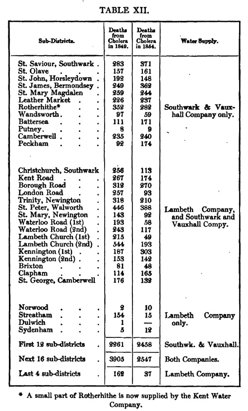

Module 3
Select a Research Design
By the end of this module, you should be able to:
- Articulate the benefits and limitations of random assignment
- Explain the logic and limitations of different quasi-experimental and observational designs that can be used when randomization is not possible or ethical
3.1 and 3.2: Experimental
In global health, we’re often interested in knowing what treatments, programs, interventions, and policies “work” and why. To answer questions of impact, we often turn to randomized controlled trials, a mainstay of medical research. In this session we’ll explore the rationale, process, and limitations of experiments.
Prepare
- CYOA diagram
- Read Chapter 2 “Why Randomize?” in Glennerster, R. & Takavarasha, K. (2013). Running Randomized Evaluations: A Practical Guide (Box, see pinned post on Ed)
- Review CONSORT statement and guidelines
- Skim articles in activity, focus on methods
During Class
3.3-3.4: Quasi-experimental
When randomization is not possible or ethical, we have to rely on nonrandomized studies for causal inference. There are two main types of nonrandomized studies: quasi-experimental and observational. The quasi-experimental designs we’ll discuss in these sessions all feature a cause that is manipulated prior to observing the outcome, but they lack random assignment.
Prepare
- Review TREND statement and guidelines
- Read the Introduction and Method sections of the following articles:
- Pre-Post: Cluver, L., Meinck, F., Yakubovich, A., Doubt, J., Redfern, A., Ward, C., … & Romero, R. H. (2016). Reducing child abuse amongst adolescents in low-and middle-income countries: a pre-post trial in South Africa. BMC Public Health, 16(1), 567.
- Post-Test Only: Mitchell, S., Gelman, A., Ross, R., Chen, J., Bari, S., Huynh, U. K., … & Makela, S. (2018). The Millennium Villages Project: a retrospective, observational, endline evaluation. The Lancet Global Health, 6(5), e500-e513.
- Difference-in-Differences: McKinnon, B., Harper, S., Kaufman, J. S., & Bergevin, Y. (2015). Removing user fees for facility-based delivery services: a difference-in-differences evaluation from ten sub-Saharan African countries. Health Policy and Planning, 30(4), 432-441.
- Interrupted Time Series: Rashidian, A., Joudaki, H., Khodayari-Moez, E., Omranikhoo, H., Geraili, B., & Arab, M. (2013). The impact of rural health system reform on hospitalization rates in the Islamic Republic of Iran: an interrupted time series. Bulletin of the World Health Organization, 91(12), 942-949.
- Regression Discontinuity: Smith, L. M., Kaufman, J. S., Strumpf, E. C., & Lévesque, L. E. (2015). Effect of human papillomavirus (HPV) vaccination on clinical indicators of sexual behaviour among adolescent girls: The Ontario Grade 8 HPV Vaccine Cohort Study. Canadian Medical Association Journal, 187(2), E74-E81.
During Class
The quasi-experimentalist John Snow
This activity was designed by Amy Finnegan (with credit due to Mastering Metrics). I probably made it less cool with my edits over time.
Difference-in-difference analysis is one of the oldest tricks in the book. In the mid-1800s, John Snow used this method to discover how residents of London were being infected with cholera.
Snow observed that the Southwark and Vauxhall Company and the Lambeth Company supplied water to high-death-rate districts in South London. Both companies used the Thames—which was highly contaminated—as their water source before 1852. In 1852, the Lambeth Company began to source water from the Thames Ditton river—which was upstream and uncontaminated. Snow was able to show that between 1849 and 1854, districts that remained supplied by the Southwark and Vauxhall Company saw an increase in deaths from cholera while those supplied by the Lambeth Company experienced a reduction in deaths from cholera.
Use this table taken from Snow’s original 1855 article to reproduce Snow’s difference-in-difference estimates.
